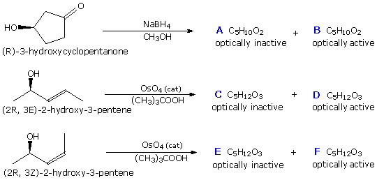

Reactions of three different enantiomerically pure compounds are shown below. In each reaction two stereoisomeric products are produced. One is an achiral meso compound and the other is a single enantiomer. Note that using tert-butylhydroperoxide as a co-reactant in the second and third reactions permits the use of catalytic amounts of osmium tetroxide.
Draw a structural formula for each of the designated products in the drawing window on the left, using the wedge/hatched bond tool to show the configuration of stereogenic carbons. Do not draw hydrogen atoms. When you are finished, check your answer by pressing the appropriate Check Product button. A help screen is available for the drawing window.

| 1. | 2. | 3. | |
|---|---|---|---|
| 4. | 5. | 6. | |
|
|
||